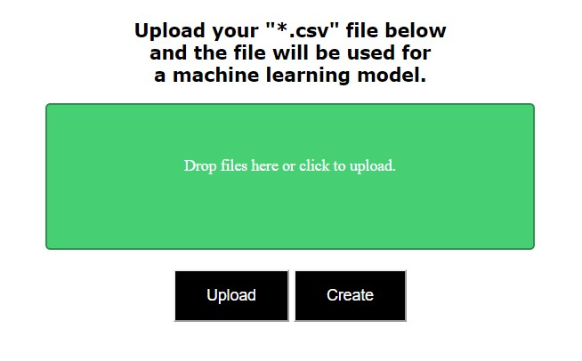
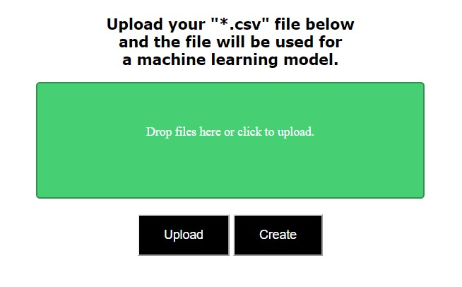

Flask_app.py
createLinear.py
creatLogistic.py
a directory named templates with getData.html and index.html inside
a directory named uploads
- Open cmd via anaconda.
- Cd to your directory (Final).
- Run the flask app:



| Instructions |
|---|
| Step 1: Create a new git repo on github (API_CURRENT). |
| Step 2: Create a new Heroku app(apicurrent), go to the settings of the app and connect your github account to the Heroku app and enable Automatic Deploys. |
| Step 3: Clone the git repo(API_CURRENT) on your pc in an new directory(Final). |
| Step 4: Place the following files in the directory (Final) you just made: Flask_app.py createLinear.py creatLogistic.py a directory named templates with getData.html and index.html inside a directory named uploads |
| Step 5: Now run flask_app.py via a flask server on your pc: - Open cmd via anaconda. - Cd to your directory (Final). - Run the flask app: |
| Step 6: Go to the displayed url to access your flask app. |
| Step 7: Select your dataset, in .csv format, by clicking on the green box or drag and drop your file in the box.  |
| Step 8: Then click on upload and wait until the file is uploaded then click on create. |
| Step 9: On this page you can choose your model type and the data you want to train the model for. After that click on get model. |
| Step 10: Your model is created in your local git director and then committed and pushed to your github account. |
| Step 11: When your model and api files are pushed to github Heroku will pull the files and then start building your app, when finished your API will be deployed at the given URL. |
| Step 12: On this site you can insert your parameters and get an prediction via the ML model you created in the flask app. |